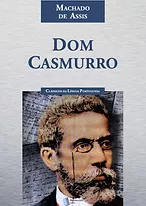

Dom Casmurro
Dom Casmurro é um romance escrito por Machado de Assis, publicado em 1899 pela Livraria Garnier. Escrito para publicação em livro, o que ocorreu em 1900 - embora com data do ano anterior, ao contrário de Memórias Póstumas de Brás Cubas (1881) eQuincas Borba (1891), escritos antes em folhetins -, é considerado o terceiro romance da "trilogia realista" de Machado de Assis, ao lado desses outros dois.
Baixar